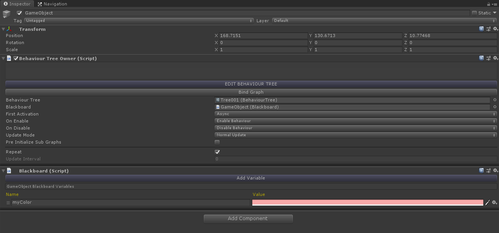
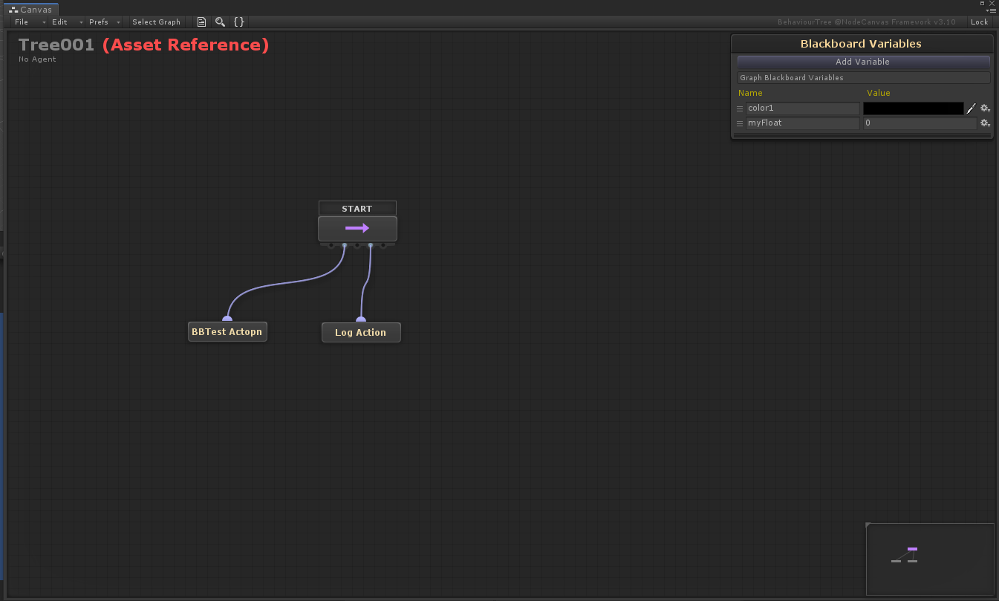
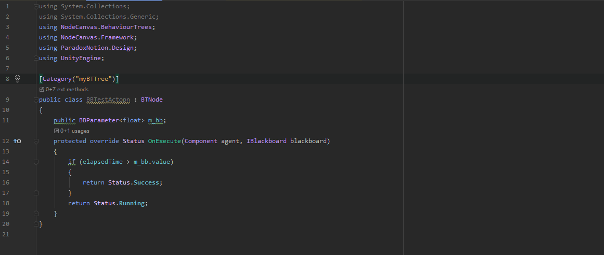
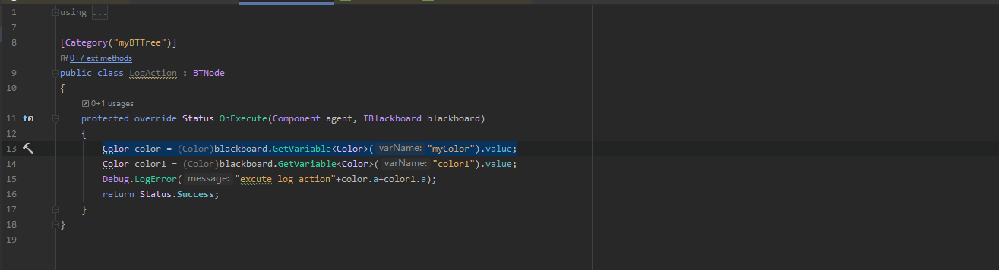
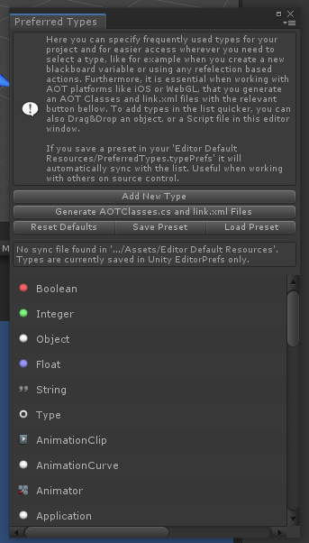

NodeCanvas

为什么用NodeCanvas呢？一直是bechaviourTree,但是感觉现在它有点跟不上是时代了【更重要的是它有点丑.....】。 还看了一段时间GOAP，也能用，但是整理逻辑个问题，如果很多放到一起感觉并不是很好维护，而且我也不清楚会切换到那个执行节点 。毕竟数据是动态的，也不清楚那些先决条件可用，以及权重是不是合适。。。
此类插件很多，BehaviourTree， FlowCanvas， NodeCanvas......。正赶上前一段时间Bundle包出了，买了些插件。这个正好包括在其中。找时间看看这个东西，应该挺不错的^_^
BTTree
状态：Resting,Success,Failure,Running,Error,Optional
叶节点：Action,Condition
复合节点：
Sequencer:顺序节点，重做到右执行，子对象返回失败时节点失败，全部成功时返回成功




这里是一个简单的graph:选择一个节点挂载BehaviourTreeOwner，同时会自动挂载对应的BlackBoard【可以理解为graph逻辑中使用的动态或这是静态的变量】
获取对应的blackboard数据方式为 【blackboard.GetVariable】, blackboard有两个地方可以添加，根目录或者是节点【两个位置的变量可以通过同一个API获取】
图二是三个Node，sequenceNode与写的两个BTNode
NodeCanvas 添加自定义BlackBoard Variable：
点击Add Variable ----> New ---->New Type ,然后在弹出面板中点击添加，搜索需要的脚本即可
